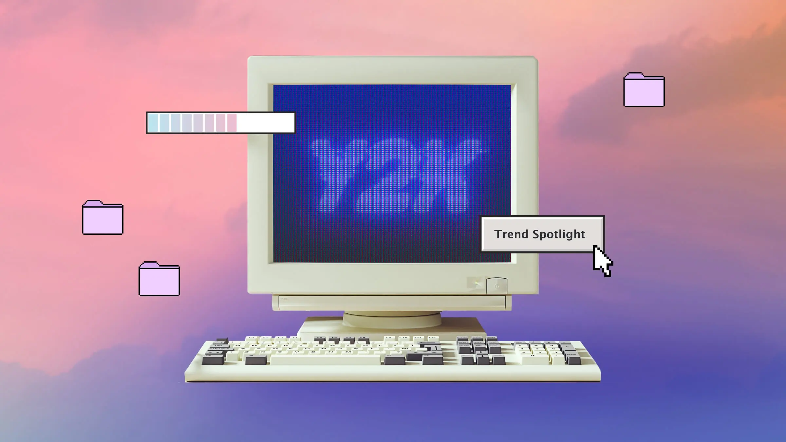

Published: 28/04/2024
Learning to code
Whilst working on this portfolio, I realised after several hours of diligent coding, that I didn't need to make a replicate copy of every page's code across every stylesheet... I could just simply use one stylesheet, and only correct a few small things. I only realised this hours after accidentally copying the same snippets of code, trying to match up each page to make the basic layout the same.
What a silly goober I was(am). 🤦🏻♀️
I don't think I've built a website since the days of the 90's web when Geocities and such were the thing to do. I've built computers, even made a DOS computer game once with my sister on my old Apple IIe & dabbled with minor tweaks on blog theme codes.

Actually, I did build a website once, for a school project, back in the year 2000, the new milliumium, Y2K. Our project was a marketing project and I decided I was selling a fake internet provider so I built a website with the help of my older sister to use as a working prop in my marketing video. I've dabbled over the years, but only remember the real basic stuff. I like to tweak and do process of elimination to find the problems in my code and try to fix things. God knows I've spent hours tweaking this one, ha!